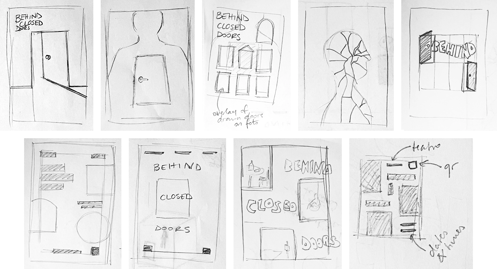
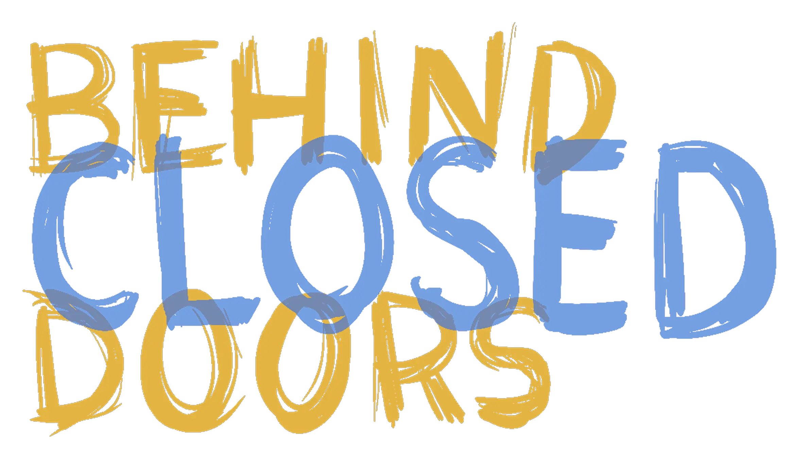
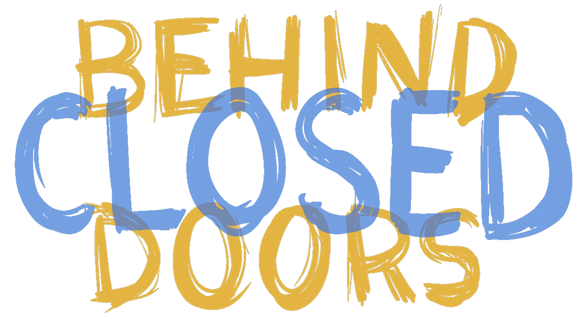
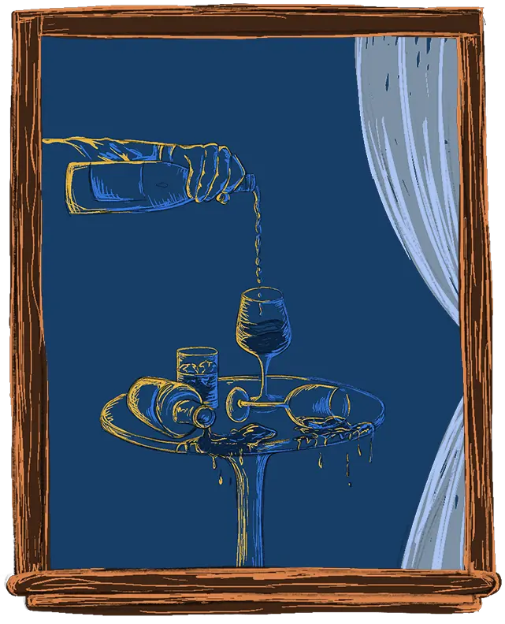
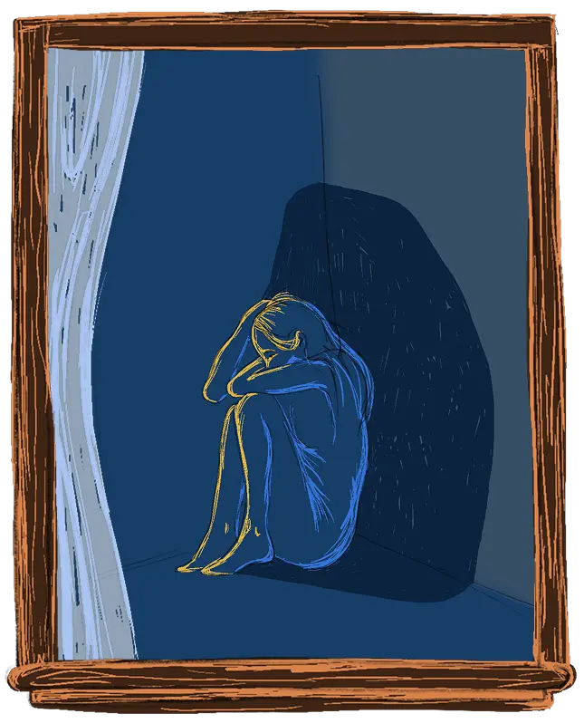
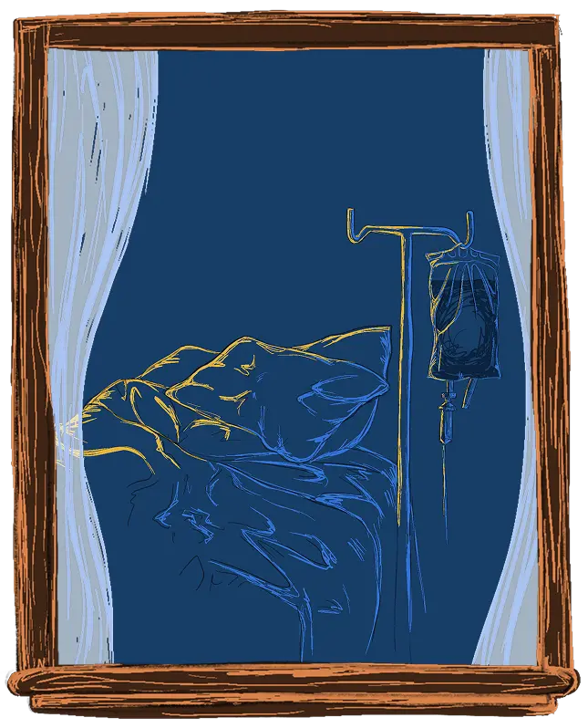
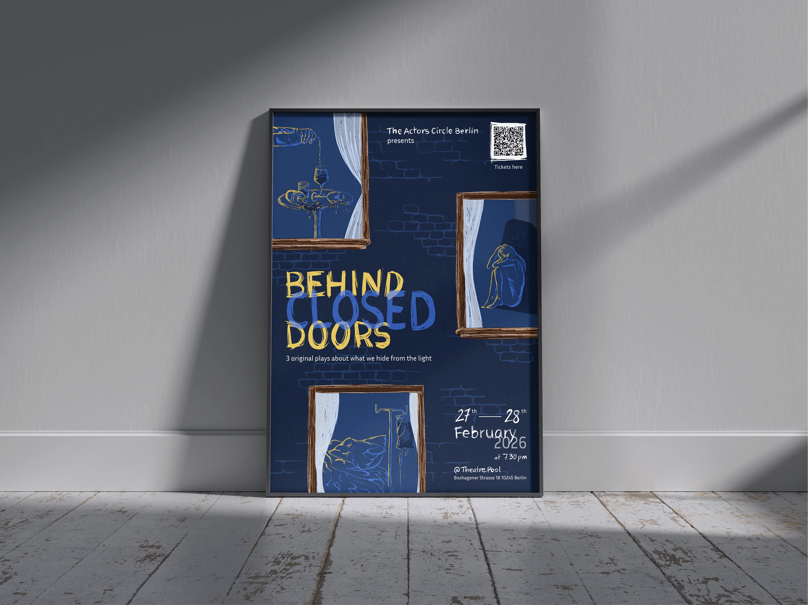
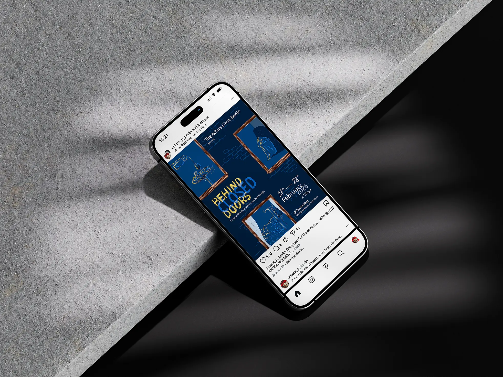
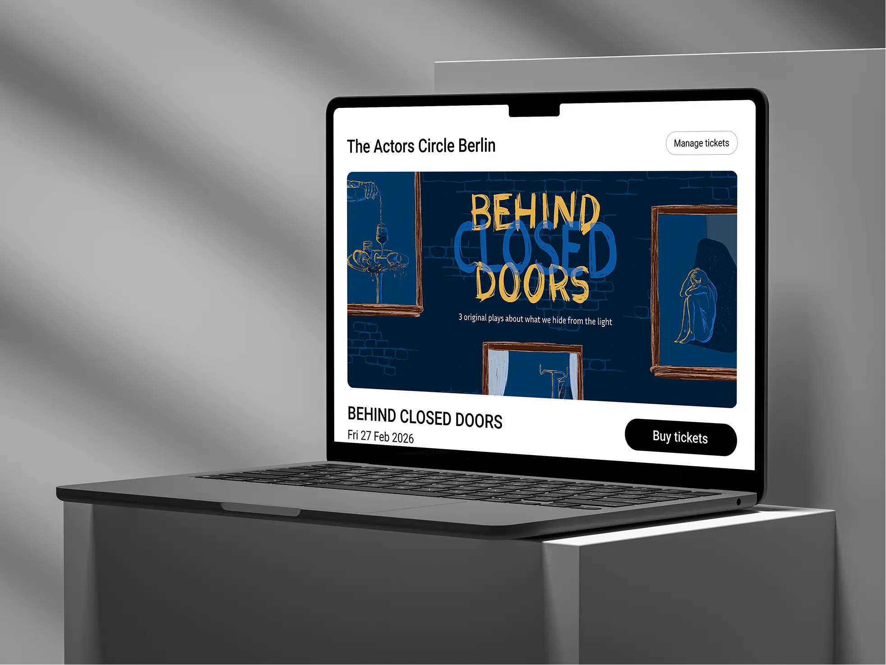

The problem
Mental health struggles are often invisible precisely because they happen behind closed doors — in private rooms, in private minds, in the parts of ourselves we don't show others. The brief was to design the key visual for Actors Circle Berlin's theatre show of the same name, and that tension between visibility and concealment became the entire design problem.
Behind Closed Doors is composed of three short plays, each exploring a different facet of mental health: a troubled relationship with a dying mother, a woman's relationship with her own body, and a public figure hiding an alcohol addiction. The task was to create a single visual that could hold all three stories — intimate, a little unsettling, and clear enough to work across print and digital event communication.
The idea
The core idea came from a simple question: what does it feel like to witness something private you weren't supposed to see? I landed on the image of looking into lit windows at night — the audience becomes the intruder, peering into the characters' homes and minds.

My role
Tools
- Procreate
- InDesign
The process
I read the three scripts first. Each play had a different emotional register and a different kind of hidden thing — illness, self-image, addiction. The visual language had to hold all three without flattening them into a single message.
Typography. Hand-drawn lettering throughout, to evoke an urgent, DIY feeling — like something written quickly, secretly, or under emotional pressure.


Colour palette. A deep night blue as the base, with warm amber and ochre accents to suggest lit interiors seen from outside in the dark.
The outcome
All illustrations, textures, patterns, and the main lettering were hand-drawn in Procreate, then composed and finalised in InDesign. Each play got its own scene — a window into a different private moment.

A public figure hiding an addiction — wine poured, bottles accumulating, the performance of control slowly unravelling.

A woman alone with herself — the private, often painful relationship between a person and their own body. Written by my sister, Roberta Sgariglia.

A troubled relationship with a dying mother — an unmade bed, an IV tower, and the unbearable intimacy of illness.
The poster came first, establishing the full visual system. I then adapted it into an Instagram post and a website ticketing banner, maintaining the visual language while adjusting proportions and hierarchy for each format.



Reflection
Behind Closed Doors is one of the projects I'm proudest of, partly because of the constraints: a 3-day timeline, a solo brief, and a subject matter that required genuine sensitivity. The "lit window at night" concept gave the work a visual idea strong enough to anchor everything else without needing to be explicit.
The constraint of three separate plays inside one visual actually made the design stronger. Rather than trying to represent "mental health" in the abstract, I had to translate three specific, concrete human situations into three specific scenes.
Working with hand-drawn illustration and lettering rather than a polished digital aesthetic was a deliberate choice I'd make again. The rawness serves the content. Not every design problem wants to look perfect.